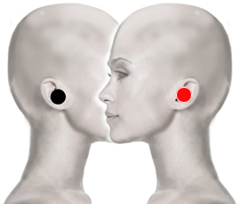

Tinnitus
Pares
oído - oído
mastoides - riñón
temporal - temporal*
yunque - riñón

*Nota: ambos polos en el temporal derecho o izquierdo.
Generalidades:
Tinnitus o acúfenos: consiste en escuchar continuamente un sonido dentro de la cabeza o en algún oído, no tiene que ver con alucinaciones auditivas. El ruido puede ser un zumbido constante. Casi todos hemos escuchado un ruido similar después de estar expuestos a ruidos muy estridentes por tiempo prolongado como después de asistir a un concierto de rock, a una discoteque o fábrica. La diferencia es que para quien padece Tinnitus el ruido nunca se apaga y llega a ser muy molesto causando trastornos como estrés, aislamiento y depresión. También se puede escuchar un ruido como de aceite hirviendo en una sartén o un golpeteo al ritmo del pulso cardiaco. Se desconoce del todo la causa, pero puede estar asociado a trastornos en el oído y a la pérdida de audición.
Estos pares también pueden ser útiles para desinflamar o destapar el oído después de haber tenido un cambio de presión como al viajar en avión o sumergirse en una alberca.